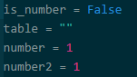

Loops

An example of a loop in Python. The "while" is the loop, the "repeat > 0" is the conditional, and the code that is indented is repeated every time the program goes through the loop.
Loops allow you to repeat a specific section of code until a desired condition is reached. Loops require a conditional in order to work.
Conditionals

An example of a conditional in Python. In this example, the "length % 2 == 0" is the conditional, and the "not" is used as a way to reverse the outcome of the conditional.
Conditionals are used as a way to
Variables
An example of a variable in Python. The
Loops allow you to repeat a specific section of code until a desired condition is reached. Loops require a conditional in order to work.
Functions

An example of a function in Python. The "while" is the loop, the "repeat > 0" is the conditional, and the code that is indented is repeated every time the program goes through the loop.
Loops allow you to repeat a specific section of code until a desired condition is reached. Loops require a conditional in order to work.